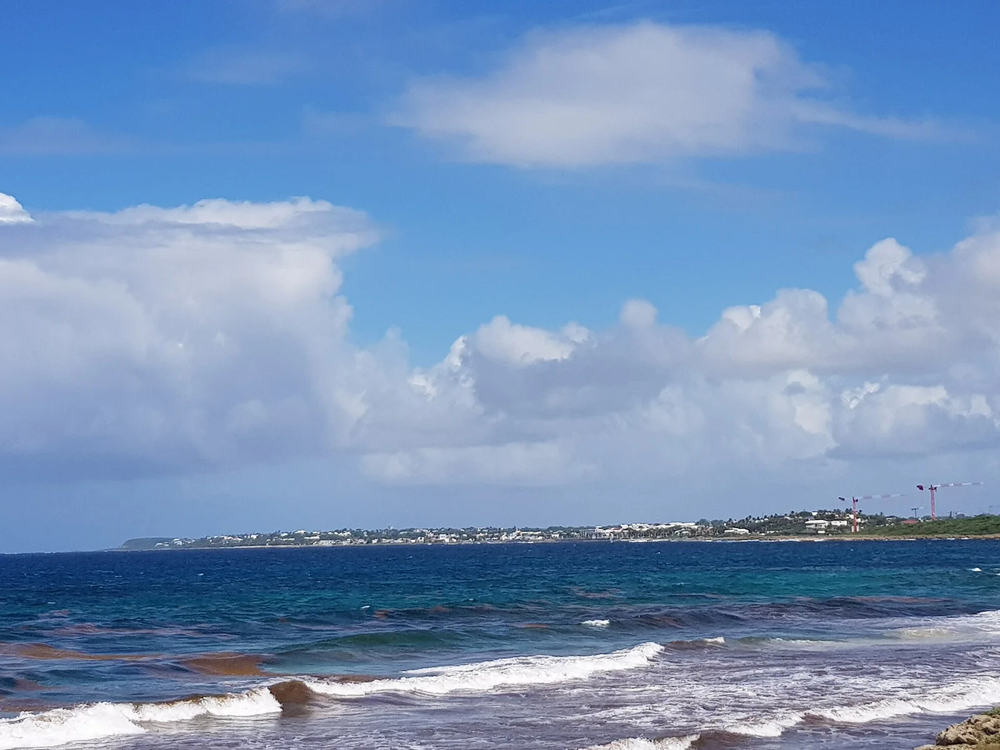

Le Moule — L’Autre Bord
Grande-Terre, Guadeloupe · surf, bodyboard

Côte atlantique de la Grande-Terre, où Le Moule est l’un des hauts lieux du surf guadeloupéen. Autour de la baie, plusieurs vagues de récif fonctionnent selon la houle et la marée.
- Lieu
- Grande-Terre, Guadeloupe
- Niveau
- Intermédiaire
- Activités
- surf, bodyboard
- Type d'eau
- Mer / océan
- Coordonnées
- 16.33, -61.34 (position approximative du secteur)
Dangers à connaître
- Récif corallien peu profond sous les vagues.
- Oursins sur les fonds rocheux.
- Courants dans les passes du récif.
Le conseil d'Ocean Buddy
Demande conseil dans un club local : les pics autour de la baie changent selon la houle et la marée.
Ouvrir dans Ocean Buddy Télécharger sur l'App Store
Source : Fiche Ocean Buddy · septembre 2026 · à vérifier localement.